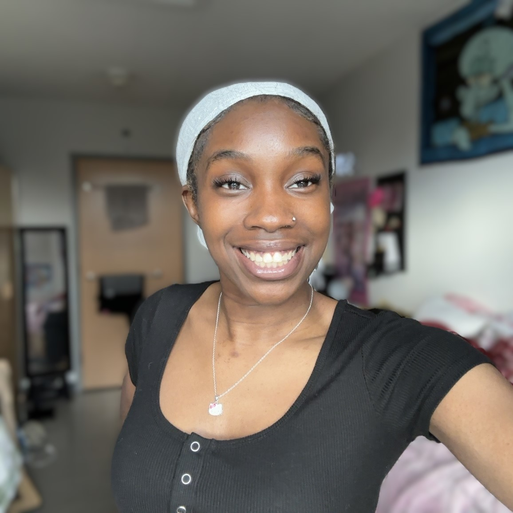
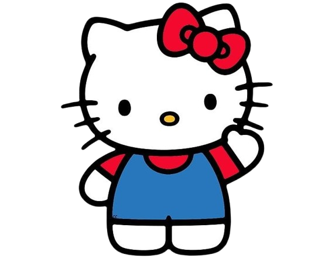

Hello! My name is Temitope Sakote. I am a junior at Penn State Behrend majoring in Digital Media, Arts and Technology.
I want to pursue a career in UI/UX Design. I’ve always liked how creativity and technology can come together. Designing easy-to-use and nice-looking interfaces lets me mix my love for art and problem-solving. I enjoy making things that feel simple to use so they can work the way people expect them to.
I picked my major because it lets me try out lots of different creative skills, like making websites and working with media. My goal is to keep learning and improving every day. I think good design isn’t just about how something looks, it’s also about how it works and how it helps people.
In this website, you’ll see how much I’ve grown in my skills and creativity. I’ll share some of the projects I’ve done and what I’ve learned along the way. I hope you enjoy exploring my website, and maybe it will even inspire you in some way. Thanks for visiting!
